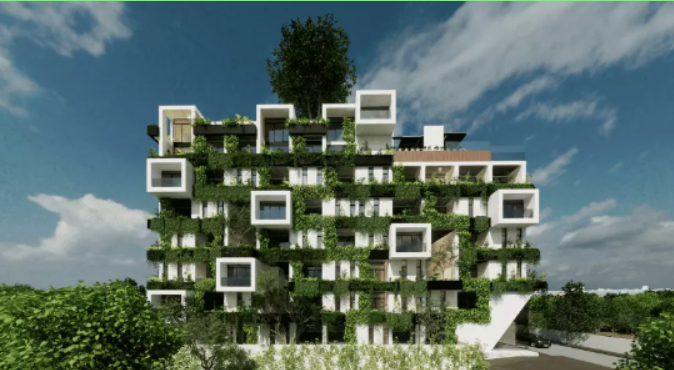
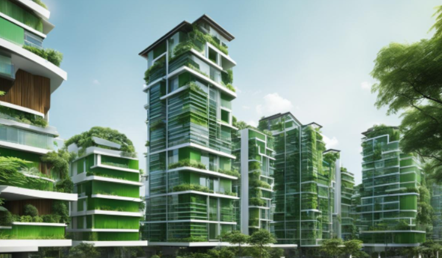

Construcciones Mason es una empresa que se centra en la contruccion de complejos departamentales en el estado de Quintana Roo.
Nuestra mision es un desarrollo sustentable en la region, Por lo que nuestras construcciones toman en cuenta la fauna con la que se rodea. Ademas de tener los mejores departamentos para nuestros futuros inquilinos. La vision que tiene Construcciones Mason es ser la empresa numero 1 de contruccion en Quintana Roo y ser ademas la mas amigable y incluyente con nuestra amada tierra.
Nuestros futuros proyectos
Complejo departamental Kuxtal
Ubicado en la avenida 135 de Cancun, el departamento Kuxtal es una revolucion para la zona, siendo que incorpora zonas amigables para los animales salvajes y ademas de diseños de edificio novedoso y revolucionario para los inquilinos, quienes disfrutaran de las comodidad que ofrece el resinto.

Complejo departamental Luz Verde
La Luz Verde se encuentra en la avenida Arco Norte que se ubica en la ciudad de Cancun. Este complejo departamental se caracteriza por la incoporacion de la vegetacion en la construccion. Tambien tiene la particularidad de que tiene instalada paneles solares para la energia limpia

Complejo Departamental Coati
Nuestro Departamento Coati que se localiza en el municipio de Playa del Carmen, en la avenida constituyente es un gran paso para el municipio siendo el edificio departamental mas alto del municipio con 194 m de altura, siendo igual de sustentable que nuestros proyectos pasados